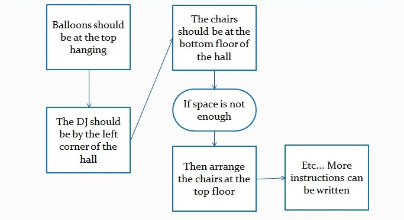

Algorithm (or Algorithmic thinking) is simply the process of writing (or sketching) down set of instructions to be followed when solving the smaller more manageable problems.
His father immediately brought out his phone and called his friend.
His friend told him not to worry, that in the next 5 hours everything will be ready and he will call him.
On the other hand, Musa went back to his room to send an invitation to all his friends.
5 hours later, Musa’s father received a phone call from his friend.
Musa and his father drove to the party hall to decorate and arrange the items.
As they arrived the hall, they were fully satisfied with it.
Now the next thing to do is to arrange the items right? Musa’s father asked. Yes daddy, he replied.
Musa as usual brought out his pen and paper to sketch down the instructions needed to successfully arrange the hall.
Have a look at what he sketched.
